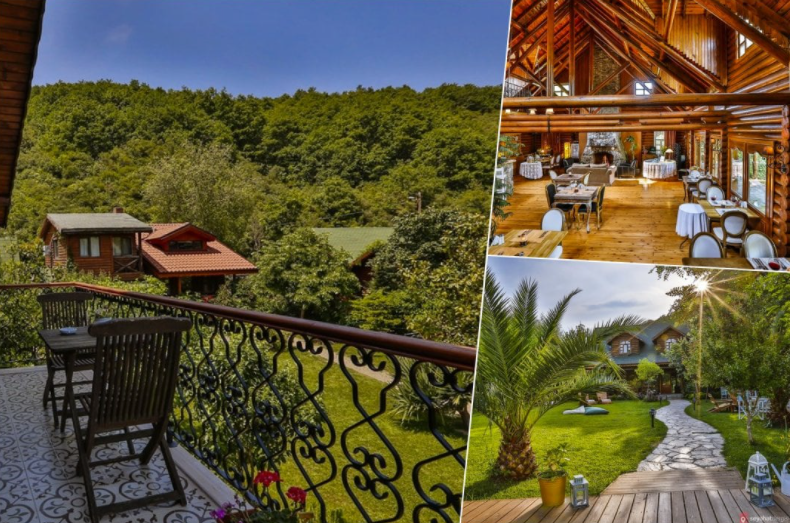
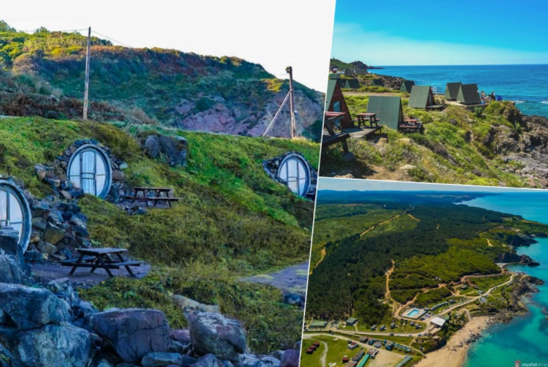
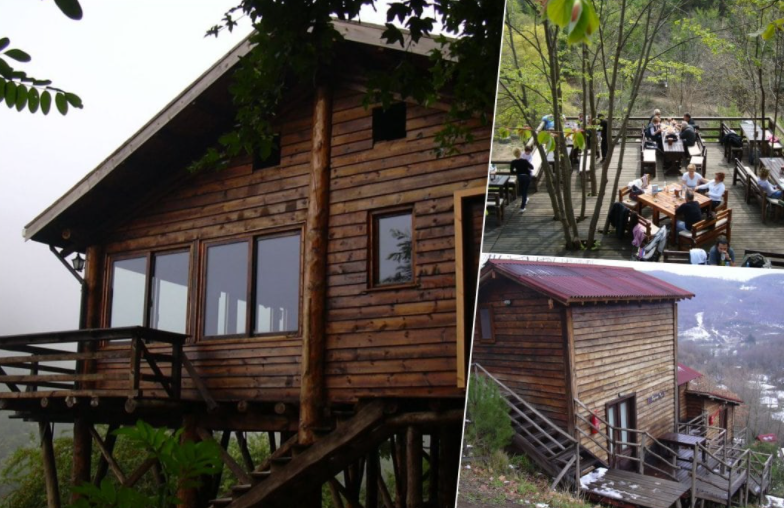
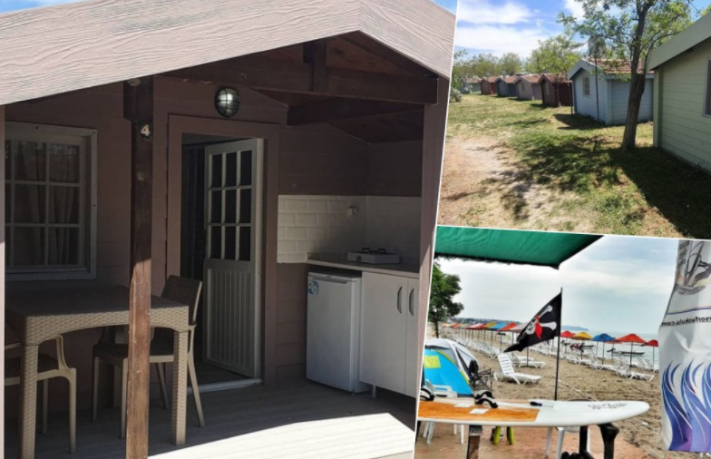
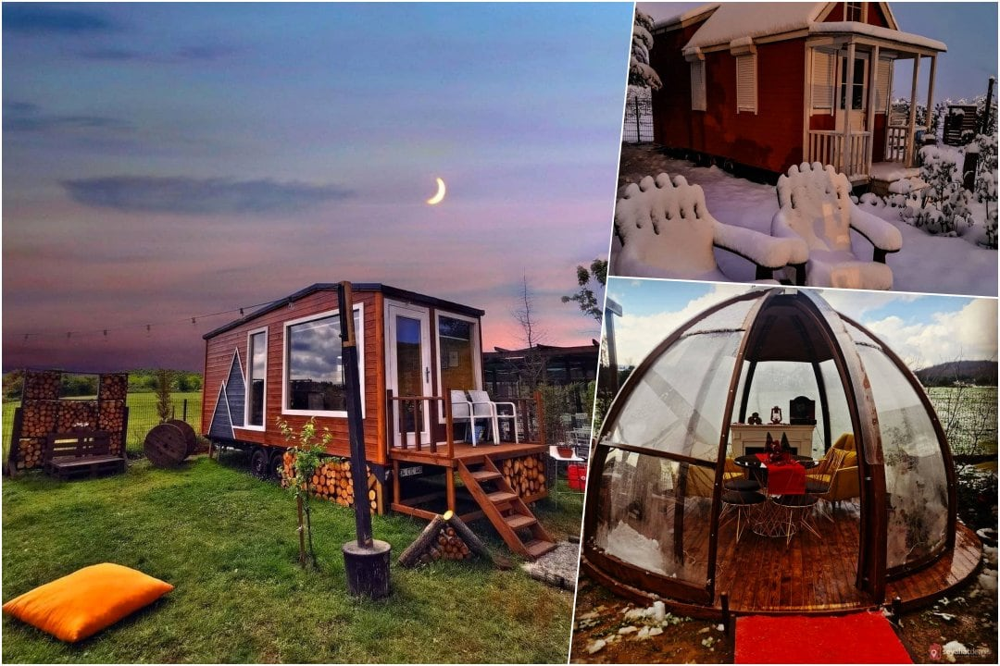
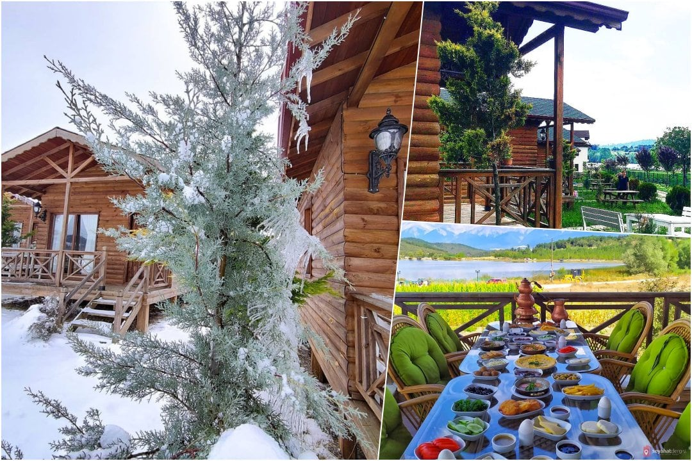
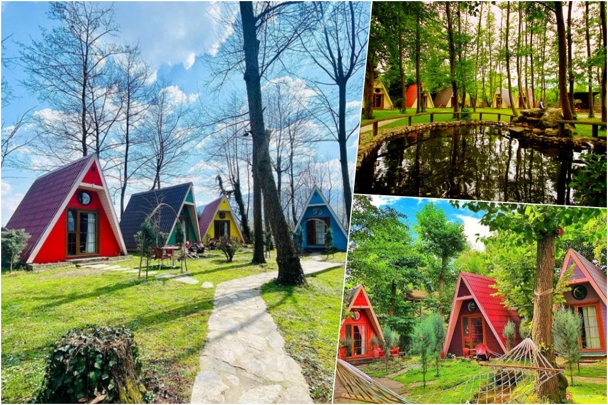
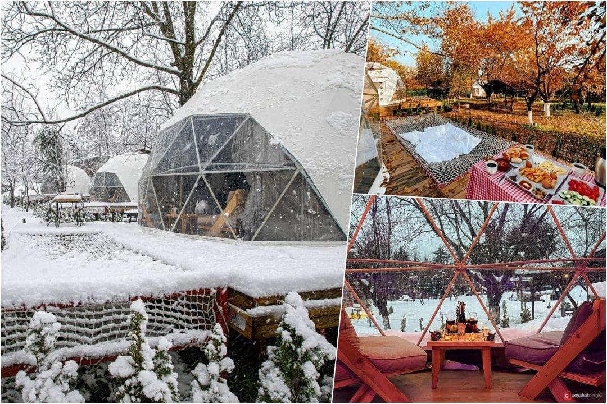
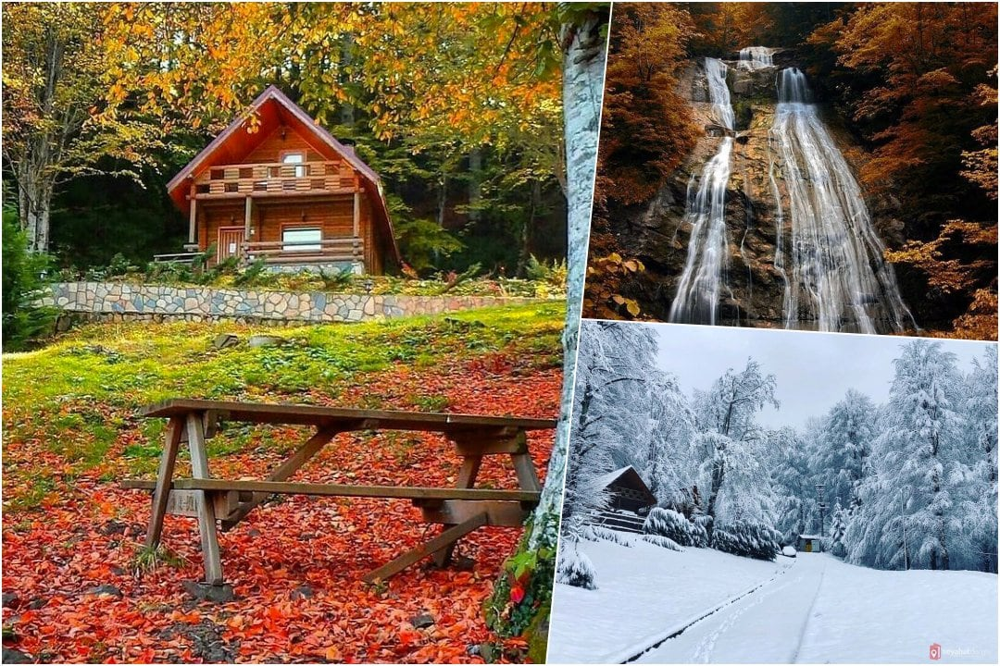

İSTANBUL İÇİ BUNGALOV EVLER
Şile, Woody Ville Çadır & Bungalov
Tüm stresinizi atmak için sakin ve doğa ile iç içe bir yer arıyorsanız Woody Ville son derece ideal. Oda ve kahvaltı hizmeti sunan bu mekanda farklı konaklama alternatifleri mevcut. İlgi çekici tasarımı ile fotoğraf çekerken sanatsal açılar yakalayabileceğiniz tesiste denize girebilir, plajda güneşlenebilir, ata binebilir ve trekking yapabilirsiniz.
Ağva, Tranquilla Nehir Evi
Göksu Nehri’nin kıyısında olan Tranquilla Nehir Evi, kişisel aracı olmayanlar için doğru seçim. 12 yaş altı çocukları kabul etmeyen tesiste duyacağınız tek ses akan nehre ait. Oda – kahvaltı hizmeti sunan tesiste organik ürünlerle hazırlanan Karadeniz mutfağına ait lezzetleri tadabilirsiniz. Ayrıca burası kış aylarında da konaklamaya uygun.
Şile, Sahil Kamp İstanbul
Sahil Kamp İstanbul, Taş ev, Tiny house, Karavan, Glamping çadır, Hobit evleri, ormanda bungalov evler ve deniz manzaralı bungalov evler olmak üzere, sayamadığımız bir kaç çeşit daha konaklama alternatifi mevcut.İstanbul’da doğa ile iç içe ister deniz manzaralı ister orman içerisinde konaklama deneyimi için tercih edebileceğiniz bir yer.
Beykoz, Kulindağ Dağ Evi
Eğimli bir arazide, ağaçların arasında bulunan Kulindağ Dağ Evi’ne otobüslerle gitmek mümkün. Zengin bir açık büfeden sabah kahvaltınızı yapabilir, konforlu odanızda tüm ihtiyaçlarınızı karşılayabilirsiniz. Çevreyi keşfetmek için doğa yürüyüşlerine çıkabilir, akşam yemeklerinde farklı lezzetler sunan restorana uğrayabilirsiniz.
Silivri, Semizkum Mocamp
Semizkum Mocamp, sığ ve kumlu bir denize kıyısı olan bir işletme. Burada konaklarken plajdaki şemsiye ve şezlongları ücretsiz kullanabilirsiniz. Karavan ve çadır imkanının yanı sıra 2, 4 ve 5 kişilik bungalov seçeneklerinin olduğu Semizkum Mocamp’te ihtiyaçlarınızı karşılamak için market ve restoranlar gün boyu açık. Deniz ve doğa ile iç içe zaman geçirmek ve yüzmek istiyorsanız burayı tercih edebilirsiniz.
Polonezköy, Yako House Park
Tiny House konseptli Yako House Park’ta kuşların neşeli sesleri eşliğinde serpme köy kahvaltınızı yapabilir, akşam barbekü keyfine doyabilir ve uzun zamandır aradığınız huzurun tadını çıkarabilirsiniz. Birbirinden farklı konaklama alternatiflerinin olduğu Yako House Park, içinde Survivor Park gibi alanların olduğu, dilerseniz ATV’ler ile tura çıkabileceğiniz oldukça geniş bir yer.
Bursa, Gököz Natural Park
Yazın göl manzarası karşısında dinlenmek, kışın karla kaplı dağları izlemek için ideal bir yerde bulunan Gököz Natural Park; temiz yayla havası, lüks evleri, binicilik, bisiklet ve yürüyüş parkurları ile dinlenmek ve yeni deneyimler edinmek için ideal.
Maşukiye, Cansu Tatil Köyü
Maşukiye’de yer alan Cansu Tatil Köyü, farklı konaklama seçenekleri sunuyor.Bunlardan biriside özgün bir mimariye sahip bungalov evler.Dik çatılı, renkleri ve yapısıyla sıcak bir görünümü ile oldukça hoş bir ortam sunuyor.Bölgenin doğal güzellikleride evlerin hoş görüntüsüyle birleşince, ortaya konaklamak için eşsiz bir mekan çıkıyor.
Sapanca, Hypnos Sapanca Glamping & Spa
Glamping otel olarak hizmet veren …, serpme kahvaltı, mangal ateşi, mini bar ve size özel küvet ve şömine sunuyor.Kubbe evlerde farklı bir konaklama deneyimi yaşayabilirsiniz.Tesis sadece 16 yaş üzeri misafirleri kabul ediyor.Glamping odalarda kalarak doğa ile iç içe bir konaklama yapabilirsiniz.
Düzce, Güzeldere Şelalesi Tabiat Parkı Kır Evi
Güzeldere Şelalesi’nin 130 metreden dökülüşünü konfor içinde seyretmek ve çevresinde piknik yapmak için bu tesiste konaklayabilirsiniz. Orman ve şelale manzarasının hakim olduğu, kahvaltı dahil konseptli mekanda doğa ile baş başa kalabilirsiniz.